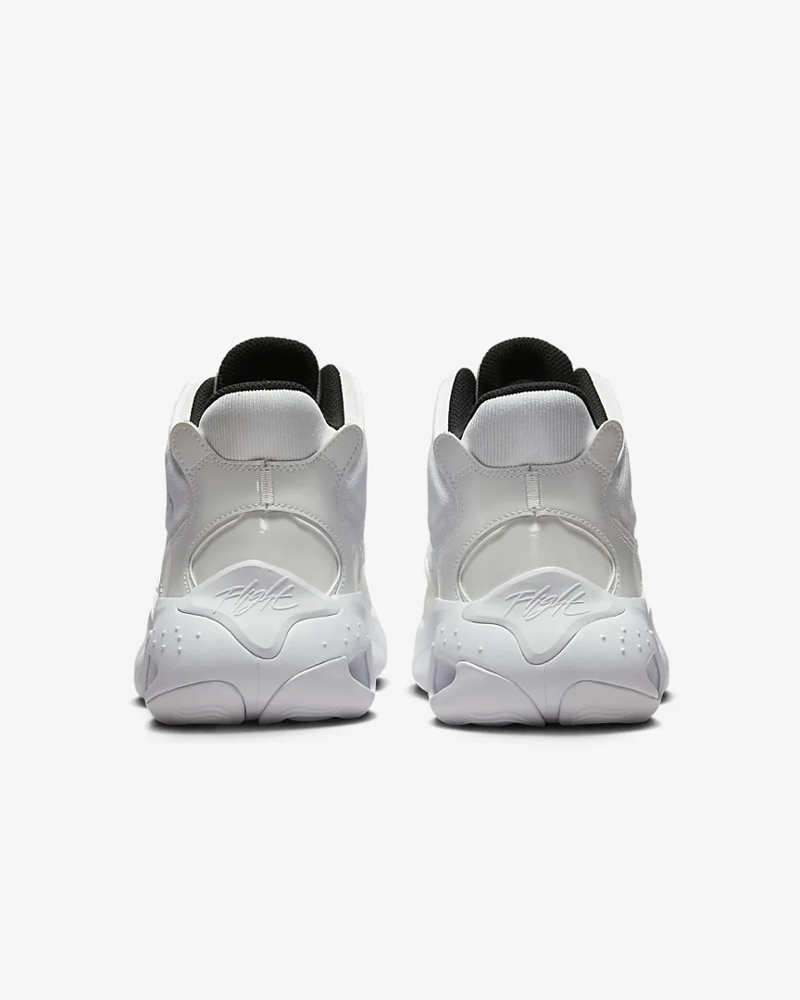
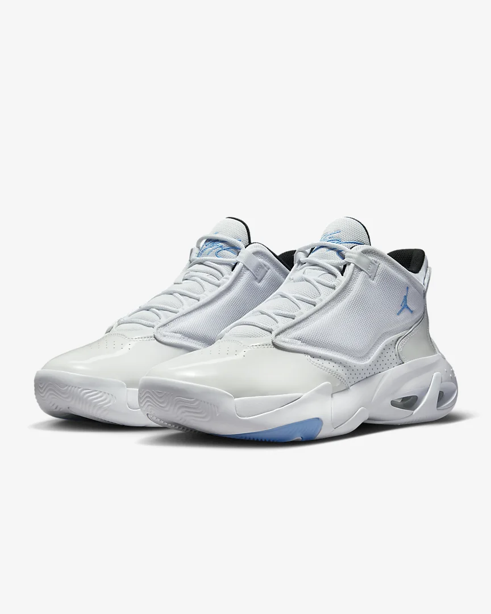

|

|

|
The lightweight cushioning found in this next generation basketball shoe takes cues from its predecessors. Take flight on the court with timeless style and cloud-like heel support.
Genuine leather, synthetic leather and polyester combine in the upper for exterior cushioning.
Visible Max Air unit supplies lightweight impact cushioning and comfort beneath your heel.
Six futuristic waves of tread on the rubber outsole provide multi-surface traction.
Rubber outsole
Not intended for use as Personal Protective Equipment (PPE)
Colour Shown: White/Black/University Blue
|